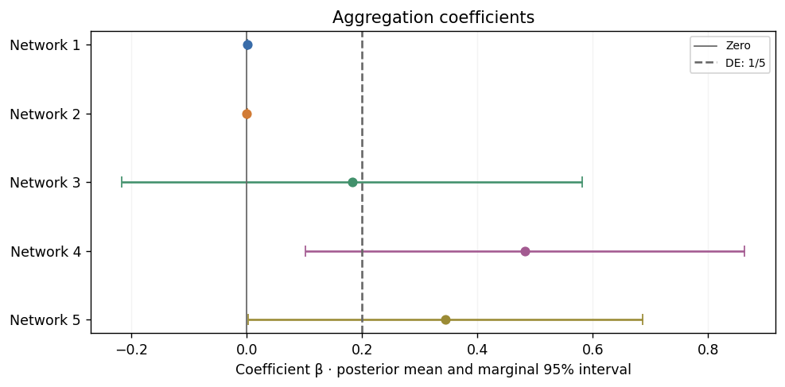
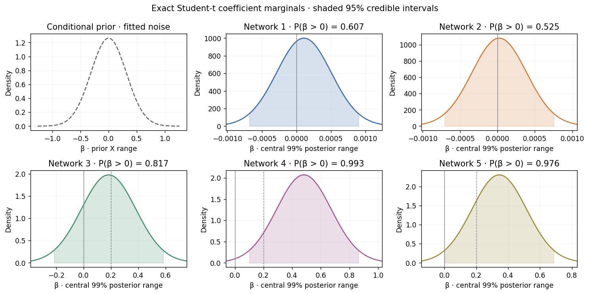
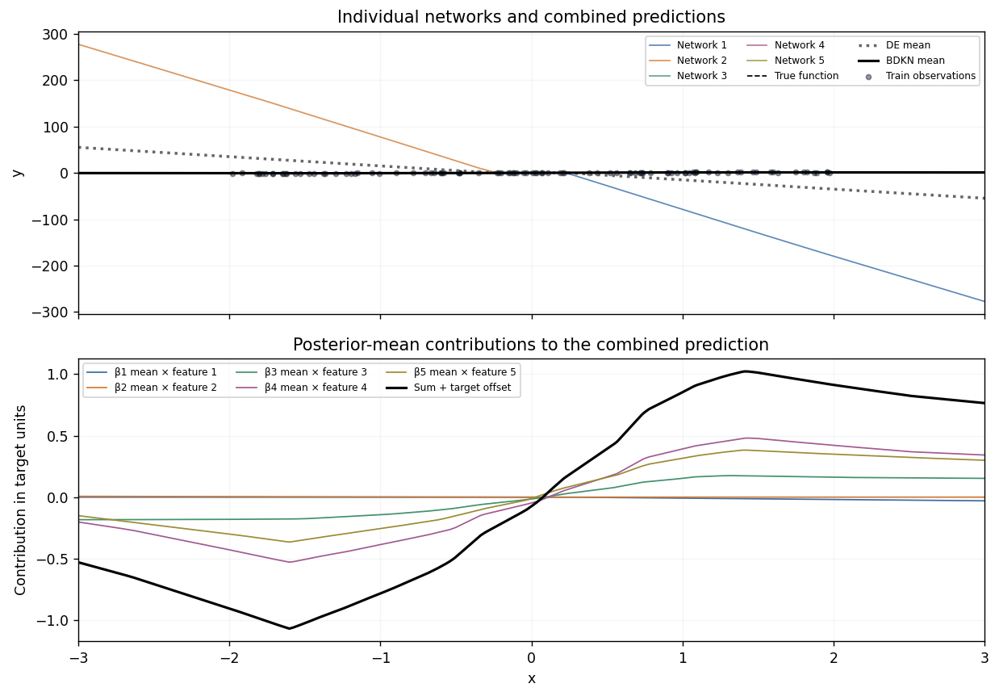
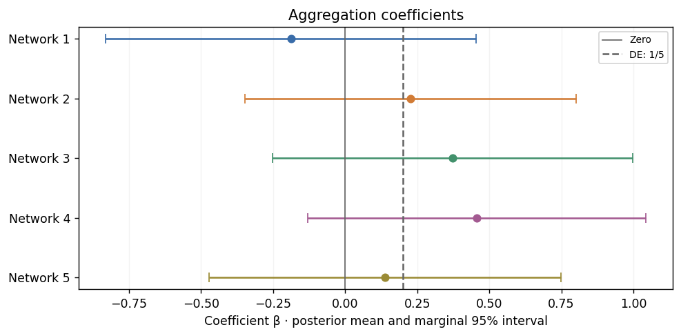
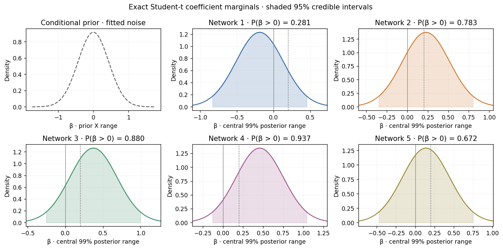
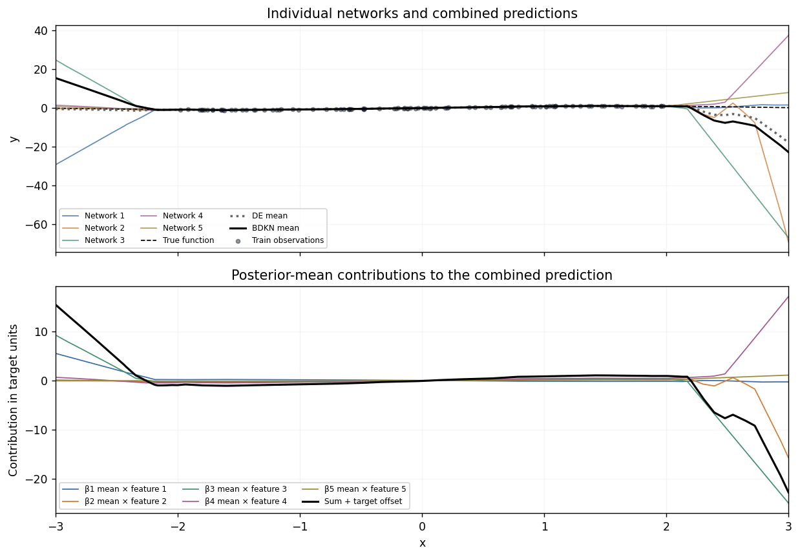
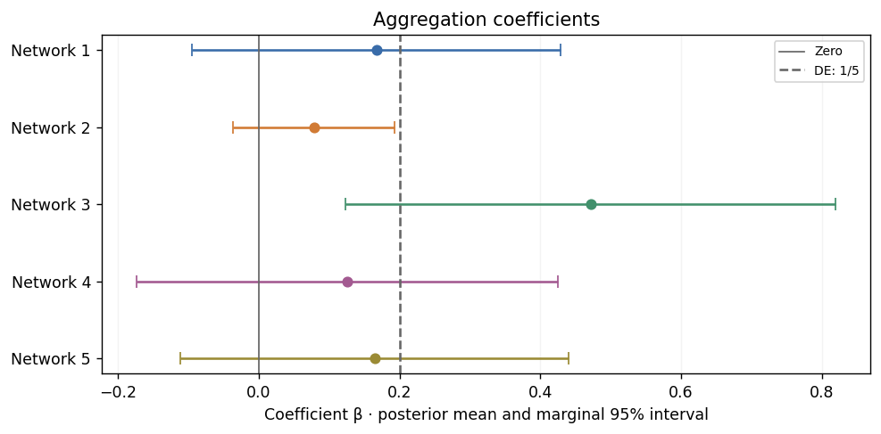
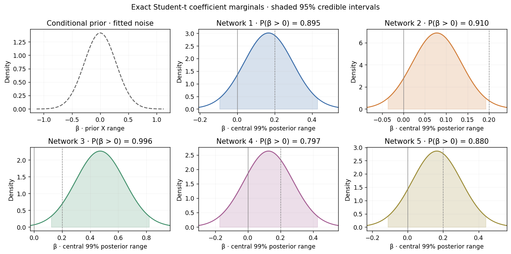
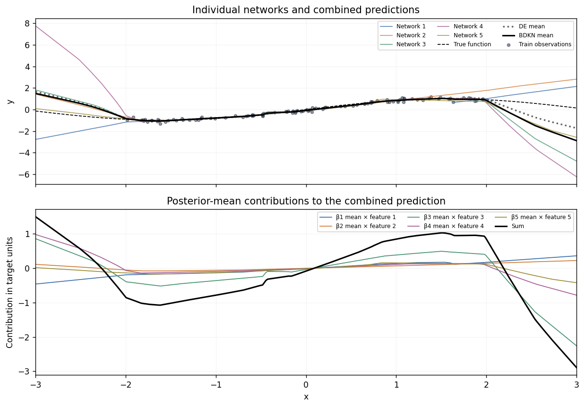

Regression comparison
Download resultsAggregation weights
Coefficients can be negative and need not sum to one. Intervals describe coefficient uncertainty; the dashed reference is DE’s fixed 1/H weight.
BDKN


Each density panel uses its own X range for readability; coefficient intervals above share a common axis. Prior reference conditions on fitted noise. Contribution shares use held-out inputs; test targets are used only for scoring.
| Network | β mean | 95% low | 95% high | P(β > 0) | Contribution share | Test RMSE | Test NLL |
|---|---|---|---|---|---|---|---|
| 1 | 0.15904 | -0.40041 | 0.71849 | 0.71299 | 0.15609 | 0.15863 | 0.26733 |
| 2 | 0.10348 | -0.42784 | 0.63481 | 0.64999 | 0.10236 | 0.16842 | 0.62251 |
| 3 | 0.29566 | -0.28358 | 0.87490 | 0.84317 | 0.28899 | 0.17476 | 2.61466 |
| 4 | 0.30206 | -0.08629 | 0.69041 | 0.93702 | 0.30991 | 0.20717 | 1.26128 |
| 5 | 0.14872 | -0.40583 | 0.70327 | 0.70207 | 0.14264 | 0.15734 | 0.32964 |
Functional repulsion · BDKN



Each density panel uses its own X range for readability; coefficient intervals above share a common axis. Prior reference conditions on fitted noise. Contribution shares use held-out inputs; test targets are used only for scoring.
| Network | β mean | 95% low | 95% high | P(β > 0) | Contribution share | Test RMSE | Test NLL |
|---|---|---|---|---|---|---|---|
| 1 | 0.00011 | -0.00068 | 0.00090 | 0.60721 | 0.01007 | 113.79520 | 2.97231 |
| 2 | 0.00002 | -0.00071 | 0.00075 | 0.52540 | 0.00192 | 105.95840 | 7.23652 |
| 3 | 0.18257 | -0.21657 | 0.58171 | 0.81683 | 0.18678 | 0.25536 | 0.23424 |
| 4 | 0.48231 | 0.10134 | 0.86328 | 0.99319 | 0.45298 | 0.16006 | -0.08138 |
| 5 | 0.34444 | 0.00192 | 0.68696 | 0.97562 | 0.34825 | 0.20573 | 1.20878 |
Weight repulsion · BDKN



Each density panel uses its own X range for readability; coefficient intervals above share a common axis. Prior reference conditions on fitted noise. Contribution shares use held-out inputs; test targets are used only for scoring.
| Network | β mean | 95% low | 95% high | P(β > 0) | Contribution share | Test RMSE | Test NLL |
|---|---|---|---|---|---|---|---|
| 1 | -0.18849 | -0.83016 | 0.45319 | 0.28068 | 0.09871 | 5.87903 | 37793.50977 |
| 2 | 0.22757 | -0.34708 | 0.80222 | 0.78304 | 0.12099 | 8.58978 | 3523.56532 |
| 3 | 0.37291 | -0.25228 | 0.99810 | 0.88027 | 0.50802 | 15.20136 | 6.31369 |
| 4 | 0.45708 | -0.12942 | 1.04358 | 0.93739 | 0.23477 | 6.45317 | 234.67901 |
| 5 | 0.13806 | -0.47317 | 0.74929 | 0.67248 | 0.03751 | 1.83744 | 760889.90794 |
First-order repulsion · BDKN



Each density panel uses its own X range for readability; coefficient intervals above share a common axis. Prior reference conditions on fitted noise. Contribution shares use held-out inputs; test targets are used only for scoring.
| Network | β mean | 95% low | 95% high | P(β > 0) | Contribution share | Test RMSE | Test NLL |
|---|---|---|---|---|---|---|---|
| 1 | 0.16678 | -0.09493 | 0.42849 | 0.89547 | 0.16779 | 0.77498 | 10.22777 |
| 2 | 0.07796 | -0.03659 | 0.19252 | 0.91001 | 0.07715 | 0.88143 | 0.44429 |
| 3 | 0.47116 | 0.12263 | 0.81969 | 0.99572 | 0.44483 | 1.39888 | 9.73069 |
| 4 | 0.12590 | -0.17339 | 0.42519 | 0.79703 | 0.19796 | 2.63031 | 758.82007 |
| 5 | 0.16444 | -0.11134 | 0.44023 | 0.88019 | 0.11227 | 0.77483 | 26.00768 |